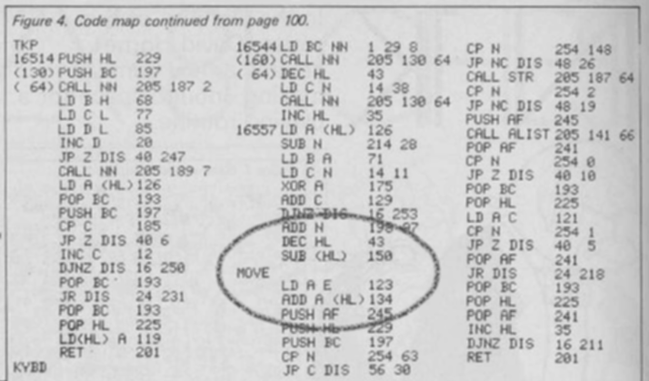
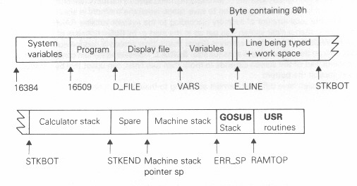

risorse | scacchi in 1K
Da tempo mi ero prefisso di studiare il codice del celebre programma di scacchi “1K ZX Chess” scritto per lo ZX81 con 1K di memoria RAM. L'occasione è arrivata quando mi sono imbattuto per caso nell'archivio on-line della rivista Your Computer che pubblicò a suo tempo una serie di articoli ad esso dedicati[3][4][5].
Dei tre articoli, il primo affronta il problema della visualizzazione della scacchiera, il secondo quello della validazione delle mosse di una partita giocata tra due avversari umani, il terzo quello dell'implementazione della strategia di gioco.
L'ultimo articolo della serie è sicuramente il più interessante. Gran parte dell'attenzione è posta nell'illustrare nel dettaglio la procedura da seguire per ottenere una versione del programma utilizzabile da uno ZX81 con 1K di RAM utilizzandone uno espanso, ma non entra nel merito di come il programma funziona se non per sommi capi, descrivendo brevemente lo scopo delle routine principali.
Una revisione dell'articolo[1] mette in evidenza alcuni errori presenti nel listato nonché alcune mancanze nella preparazione del programma finale, su tutte la pre-impostazione della mossa iniziale del computer.
Analizzando il codice sorgente presentato nell'articolo sono ben presto giunto ad un punto piuttosto sospetto, in cui la routine di lettura delle coordinate della mossa dell'utente sfocia in quella dell'analisi della mossa, sovrascrivendo in modo apparentemente insensato il valore del registro A:
La porzione sospetta di codice
Ho deciso allora di partire dall'immagine del nastro originale e di disassemblare il codice macchina in esso contenuto. Fortunatamente qualcuno ci aveva già pensato prima di me[7], e il suo lavoro ha facilitato enormemente il mio.
Per poter interpretare correttamente i contenuti dell'immagine binaria del nastro che contiene il programma è indispensabile conoscere innanzitutto l'organizzazione della memoria RAM dello ZX81:
Suddivisione della memoria RAM dello ZX81 (fonte: [6], cap. 27)
La porzione di interesse è quella destinata al BASIC, ovvero il segmento iniziale che va da 4000H (16384D) fino al marcatore 80H.
Il primo segmento, denominato System variables, è un'area di memoria ad uso e consumo del sistema operativo; Program è invece la zona ove si trova il listato BASIC del programma attualmente in memoria; Display file è la memoria video, mentre in Variables sono memorizzate le variabili del programma BASIC. Le aree di memoria dello ZX81 sono dinamiche, e vengono espanse o ristrette in modo da ottimizzare l'uso della RAM disponibile.
Quando si salva un programma su nastro, lo ZX81 produce una copia del contenuto della memoria RAM dall'indirizzo 4009H = 16393D fino al marcatore 80H incluso. In pratica, quasi tutta l'area di pertinenza del sistema operativo più quella dedicata al programma BASIC, con l'eccezione dei primi 9 byte delle variabili di sistema. Questa informazione è di fondamentale importanza per la corretta interpretazione del contenuto binario del nastro originale.
Quel che segue è il contenuto binario del nastro originale:
Offset(h) 00 01 02 03 04 05 06 07 08 09 0A 0B 0C 0D 0E 0F 00000000 0B 0A 0C 32 43 A5 43 AF 43 7F 43 B6 43 C3 43 00 00000010 00 C4 43 C4 43 48 5D 40 00 02 03 00 BF FD FF 37 00000020 7D 40 FE FF 02 7D FA 87 0C 53 D4 9E C0 00 00 BC 00000030 1C 0A 00 00 00 00 00 00 00 00 00 00 00 00 00 00 00000040 00 00 00 00 00 00 00 00 00 00 00 00 00 00 00 00 00000050 00 00 00 76 0D F3 15 EB 17 E9 F7 09 01 0B FF F5 00000060 F6 F4 0C 0A 21 5D 40 11 0E 40 01 10 00 ED B0 C3 00000070 82 40 00 00 00 01 A3 02 EA 06 05 3E 08 21 9F 43 00000080 23 77 10 FC CD E4 40 FE 03 20 EE 22 07 40 5D CD 00000090 2D 41 21 A1 43 CD E4 40 FE 02 EB 30 DC CD CA 42 000000A0 28 D7 B9 20 F8 AF 32 41 40 CD D5 42 3A 41 40 FE 000000B0 00 28 C6 CD C3 42 CD 8F 42 18 BE 35 00 E5 C5 CD 000000C0 BB 02 44 4D 55 14 28 F7 CD BD 07 7E C1 C5 B9 28 000000D0 06 0C 10 FA C1 18 E7 C1 E1 77 C9 01 1D 08 CD C6 000000E0 40 2B 0E 26 CD C6 40 23 7E D6 1C 47 0E 0B AF 81 000000F0 10 FD C6 61 2B 96 06 02 FE 3F 38 25 FE 94 30 21 00000100 4F 69 26 43 7E 06 01 E6 7F FE 00 28 14 04 FE 76 00000110 28 0F FE 27 38 0B 7E 04 2E 37 86 CB 7F 28 02 06 00000120 00 78 69 C9 AF 32 46 40 7E E6 7F FE 35 28 44 0E 00000130 01 06 08 21 0E 40 FE 33 28 13 2E 16 FE 30 28 0D 00000140 48 FE 36 28 08 06 04 FE 37 28 02 2E 1A 7B 86 F5 00000150 E5 C5 CD FF 40 FE 02 30 13 F5 CD 5E 42 F1 FE 00 00000160 28 0A C1 E1 79 FE 01 28 05 F1 18 E2 C1 E1 F1 23 00000170 10 DB C9 7E E6 80 21 1B 40 20 02 2E 0B 16 03 7B 00000180 86 E5 F5 CD FF 40 FE 00 28 1C FE 01 20 11 7A FE 00000190 01 20 0C CD 5E 42 7B FE 52 38 13 FE 7E 30 0F F1 000001A0 E1 2B 15 20 DA C9 7A FE 01 C4 5E 42 18 F1 F1 E1 000001B0 5F 18 CD 3A 37 43 C6 30 21 3E 43 47 ED B1 2B 22 000001C0 80 40 06 56 21 3E 43 23 E5 C5 5D CD 0D 41 FE 00 000001D0 20 19 CD FA 41 6B CD 2D 41 CD FA 41 CD CA 42 28 000001E0 0A 2A 80 40 BD 20 F5 C1 E1 37 C9 C1 E1 10 D8 A7 000001F0 C9 21 37 43 7E C6 80 77 C9 E5 C5 D5 E5 C5 55 21 00000200 40 40 CD 24 07 CD 76 42 78 84 4F F1 CD 76 42 E1 00000210 CD 84 42 30 01 80 4F E1 D1 72 E5 D5 CD 84 42 30 00000220 01 90 4F CD FA 41 CD BC 41 30 02 0C 0C D1 E1 73 00000230 E1 CD FD 41 CD 84 42 30 01 0D CD FD 41 CD FA 41 00000240 3A 34 40 E6 01 81 21 3C 40 77 EB 21 41 40 BE D8 00000250 01 05 00 18 14 21 46 40 34 7E 85 6F 71 C9 21 63 00000260 40 11 46 40 01 1C 00 38 01 EB ED B0 C9 E6 7F 21 00000270 1E 43 06 05 BE C8 23 10 FB 78 C9 7D D9 32 80 40 00000280 CD CB 41 D9 79 C9 AF 32 41 40 06 56 21 3E 43 23 00000290 E5 C5 5D CD 0D 41 FE 03 20 14 6B 22 07 40 CD 2D 000002A0 41 CD CA 42 28 08 5F 16 43 CD D5 42 18 F3 C1 E1 000002B0 10 DD 3A 41 40 FE 00 CA C0 42 CD F5 42 CD FA 41 000002C0 C9 21 46 40 35 7E 3C C8 85 6F 7E C9 2A 07 40 1A 000002D0 4F 7E 36 00 12 47 D9 A7 CD 67 42 CD BC 41 D9 70 000002E0 79 12 38 03 CD 02 42 37 CD 67 42 C9 21 45 40 7E 000002F0 2B 2B 5E 16 43 12 2B 6E 62 4F E6 7F FE 35 20 0C 00000300 7B FE 47 38 04 FE 8B 38 03 79 3C 12 CB 45 36 00 00000310 20 02 36 80 C9 36 37 27 33 35 76 00 02 02 00 E4 00000320 76 0C 0A 04 00 F9 D4 3D 76 76 76 76 76 76 80 08 00000330 A9 B7 AD 76 1D 08 37 33 27 30 36 27 33 37 76 1E 00000340 08 35 35 35 35 80 35 35 35 76 1F 08 00 80 00 80 00000350 35 80 00 80 76 20 08 80 00 80 00 80 00 80 00 76 00000360 21 08 00 80 00 80 00 80 00 80 76 22 08 80 00 80 00000370 00 80 00 80 00 76 23 08 B5 B5 B5 B5 B5 B5 B5 B5 00000380 76 24 08 B7 B3 A7 B0 B6 A7 B3 B7 76 08 08 2D 2C 00000390 2B 2A 29 28 27 26 76 08 08 08 08 08 76 76 76 76 000003A0 76 76 76 76 76 76 7D 8F 00 DA 00 00 80
La prima parte contiene le variabili di sistema:
00000000 0B 0A 0C 32 43 A5 43 AF 43 7F 43 B6 43 C3 43 00 00000010 00 C4 43 C4 43 48 5D 40 00 02 03 00 BF FD FF 37 00000020 7D 40 FE FF 02 7D FA 87 0C 53 D4 9E C0 00 00 BC 00000030 1C 0A 00 00 00 00 00 00 00 00 00 00 00 00 00 00 00000040 00 00 00 00 00 00 00 00 00 00 00 00 00 00 00 00 00000050 00 00 00 76 0D F3 15 EB 17 E9 F7 09 01 0B FF F5 00000060 F6 F4 0C 0A 21 5D 40 11 0E 40 01 10 00 ED B0 C3 00000070 82 40 00 00 00 01 A3 02 EA 06 05 3E 08 21 9F 43
Consultando il ventottesimo capitolo del manuale si possono facilmente ricavare i valori delle variabili di sistema, in particolare D_FILE e VARS (sopra evidenziate), che indicano rispettivamente la posizione del Display file e Variables all'interno della memoria RAM:
D_FILE = 4332H = 17202D
VARS = 43AFH = 17327D
Segue quindi l'area Program, in cui si trova il listato BASIC composto, come riportato nell'articolo, da tre linee:
1 REM [codice macchina] 2 SLOW 3 RAND USR X
Il ventisettesimo capitolo del manuale, che spiega come il listato BASIC viene salvato in memoria, conferma che dopo le variabili di sistema si trova il programma atteso:
00000070 82 40 00 00 00 01 A3 02 EA 06 05 3E 08 21 9F 43 00000080 23 77 10 FC CD E4 40 FE 03 20 EE 22 07 40 5D CD 00000090 2D 41 21 A1 43 CD E4 40 FE 02 EB 30 DC CD CA 42 ... 00000310 20 02 36 80 C9 36 37 27 33 35 76 00 02 02 00 E4 numero di linea = 00 01 = 0001H = 1D lunghezza della linea = A3 02 = 02A3H = 675D bytes testo della linea = EA … = REM … marcatore di fine linea = 76 = «a-capo»
Segue immediatamente la seconda riga del programma:
00000310 20 02 36 80 C9 36 37 27 33 35 76 00 02 02 00 E4 00000320 76 0C 0A 04 00 F9 D4 3D 76 76 76 76 76 76 80 08 numero di linea = 00 02 = 0002H = 2D lunghezza della linea = 02 00 = 0002H = 2D bytes testo della linea = E4 = SLOW marcatore di fine linea = 76 = «a-capo»
Si riconosce infine l'ultima riga del programma:
00000320 76 0C 0A 04 00 F9 D4 3D 76 76 76 76 76 76 80 08 numero di linea = 0C 0A = 0C0AH = 3082D lunghezza della linea = 04 00 = 0004H = 4D bytes testo della linea = F9 D4 3D = RAND USR X marcatore di fine linea = 76 = «a-capo»
Da notare che il numero di linea da 3 è diventato 3082: ciò dipende dal fatto che queste due locazioni sono utilizzate dal programma in linguaggio macchina. Poiché una volta lanciato il programma non si fa più ritorno al BASIC, questa sovrascrittura di dati non rappresenta un problema.
Dopo il programma BASIC si incontra il Display file, che inizia con un carattere di «a-capo»:
00000320 76 0C 0A 04 00 F9 D4 3D 76 76 76 76 76 76 80 08 00000330 A9 B7 AD 76 1D 08 37 33 27 30 36 27 33 37 76 1E 00000340 08 35 35 35 35 80 35 35 35 76 1F 08 00 80 00 80 00000350 35 80 00 80 76 20 08 80 00 80 00 80 00 80 00 76 00000360 21 08 00 80 00 80 00 80 00 80 76 22 08 80 00 80 00000370 00 80 00 80 00 76 23 08 B5 B5 B5 B5 B5 B5 B5 B5 00000380 76 24 08 B7 B3 A7 B0 B6 A7 B3 B7 76 08 08 2D 2C 00000390 2B 2A 29 28 27 26 76 08 08 08 08 08 76 76 76 76 000003A0 76 76 76 76 76 76 7D 8F 00 DA 00 00 80
Da notare che il Display file si trova all'offset 329H dell'immagine binaria del nastro; verrà perciò caricato in RAM all'indirizzo 4009H + 329H = 4332H = 17202D, indirizzo che combacia con il valore della variabile di sistema D_FILE.
Riformattando il contenuto del Display file si può ricostruire l'aspetto delle 24 linee che compongono il quadro video:
Addr Data ------------------------------------------------------------------------------- 4332 76 ; inizio del display file 4333 76 ; prima riga del quadro video 4334 76 4335 76 4336 76 4337 80 08 A9 B7 AD 76 ; #DRH 433D 1D 08 37 33 27 30 36 27 33 37 76 ; 1#RNBKQBNR 4348 1E 08 35 35 35 35 80 35 35 35 76 ; 2#PPPP PPP 4353 1F 08 00 80 00 80 35 80 00 80 76 ; 3# P 435E 20 08 80 00 80 00 80 00 80 00 76 ; 4# 4369 21 08 00 80 00 80 00 80 00 80 76 ; 5# 4374 22 08 80 00 80 00 80 00 80 00 76 ; 6# 437F 23 08 B5 B5 B5 B5 B5 B5 B5 B5 76 ; 7#PPPPPPPP 438A 24 08 B7 B3 A7 B0 B6 A7 B3 B7 76 ; 8#RNBKQBNR 4395 08 08 2D 2C 2B 2A 29 28 27 26 76 ; ##HGFEDCBA 43A0 08 08 08 08 08 76 ; ##### 43A6 76 43A7 76 43A8 76 43A9 76 43AA 76 43AB 76 43AC 76 43AD 76 43AE 76 ; 24^ ed ultima riga del quadro video
La casella nera posta all'inizio della quinta riga (indirizzo 4337H = 17207D) indica il colore del pezzo da giocare, mentre le lettere DHR in campo inverso sono le iniziali dell'autore. Le cinque caselle in grigetto alla riga 15 (indirizzo 43A0H = 17312D, qui rappresentate con una sequenza di cancelletti) sono l'area in cui viene visualizzata la mossa del giocatore umano.
Notare la configurazione della scacchiera, con i pezzi bianchi in alto e i neri in basso. Altra particolarità: il bianco ha già mosso! La cassetta originale contiene due versioni del programma, una con l'apertura del pedone di re, l'altra con il pedone di donna (la versione qui analizzata):

Le istruzioni originali con l'indicazione delle due versioni del programma
La scelta della mossa iniziale è del tutto arbitraria, e il programma funzionerebbe correttamente qualunque essa fosse. Evidentemente l'autore ha preferito partire con un'apertura legittima, piuttosto che affidarsi al caso.
L'ultima sezione è quella contenente le variabili BASIC, in questo caso una sola:
000003A0 76 76 76 76 76 76 7D 8F 00 DA 00 00 80 nome della variabile = 7D = X (numerica) esponente = 8F mantissa = 00 DA 00 00 terminatore = 80
Una rapida verifica circa l'indirizzo di caricamento in RAM di questa sezione: 3A6H + 4009H = 43AFH = 17327D, che corrisponde al valore assunto dalla variabile d'ambiente VARS.
Relativamente alla variabile BASIC X, l'articolo dice che è inizializzata a 16959D, ovvero l'indirizzo della routine DRIVER del linguaggio macchina:
Now add the variable X by typing:
LET X = 16959
This sets up the variable X for the Basic program. Line 3 RAND USR X actually calls the driver routine.
In realtà il valore di X è (fonte: [6], cap. 27):
X = mantissa * 2(esponente - 80H) mantissa = 00DA0000 = 0000 0000 1101 1010 0000 0000 0000 0000 Essendo ½ ≤ mantissa < 1, il bit più significativo è sempre a 1, quindi viene sovrascritto con il bit di segno. Il valore vero della mantissa è perciò: mantissa = +0,10000000110110100000000000000000 X = 0,10000000110110100000000000000000 * 2(8FH - 80H) X = 0,10000000110110100000000000000000 * 2(FH) X = 0100000001101101,00000000000000000 X = 0100 0000 0110 1101 X = 406DH = 16493D
Ecco una nuova sorpresa: il programma non ha inizio all'indirizzo dichiarato, ma all'interno del buffer MEMBOT, dentro l'area delle variabili di sistema. Tenendo conto degli offset, alla locazione di memoria puntata dalla variabile X si trova il seguente codice:
00000060 F6 F4 0C 0A 21 5D 40 11 0E 40 01 10 00 ED B0 C3 00000070 82 40 00 00 00 01 A3 02 EA 06 05 3E 08 21 9F 43
Disassemblando il frammento evidenziato si ottiene:
Addr Data OpCode ------------------------------------------------------------------------------- 406D 21 5D 40 ld hl, 405D ; 405DH = 16477D 4070 11 0E 40 ld de, 400E ; 400EH = 16398D 4073 01 10 00 ld bc, 0010 ; 0010H = 16D 4076 ED B0 ldir 4078 C3 82 40 jp 4082 ; 4082H = 16514D
Il codice trasferisce 16 byte dall'indirizzo 16477 a 16398, quindi salta alla routine DRIVER. Si tratta in sostanza di una sorta di bootstrap non documentato, che sposta la tabella dei movimenti delle pedine dall'offset 54H dell'immagine binaria all'interno dell'area delle variabili di sistema, a partire dalla variabile DF_CC:
00000050 00 00 00 76 0D F3 15 EB 17 E9 F7 09 01 0B FF F5 00000060 F6 F4 0C 0A 21 5D 40 11 0E 40 01 10 00 ED B0 C3
Il codice di bootstrap ha quindi il compito di liberare l'area MEMBOT salvando i dati in essa contenuta in una zona di memoria non critica per l'esecuzione del programma in linguaggio macchina, ma che non sarebbe stato possibile inizializzare direttamente senza causare il blocco del computer, trattandosi di variabili di sistema. Operando in questo modo, l'area MEMBOT è ora interamente a disposizione del programma pur avendo preservato la tabella dei movimenti delle pedine.
Di seguito il disassemblato del codice binario, commentato.
Addr Data Label OpCode Comment
-------------------------------------------------------------------------------
4082 06 05 DRIVER ld b,05 ; prepara l'area di input scrivendo
4084 3E 08 ld a,08 ; 5 caratteri grigetti a partire
4086 21 9F 43 ld hl,439F ; dall'indirizzo 43A0 del D_FILE
408A 77 ld (hl),a ; corrisponde all'inizio della
408B 10 FC djnz DRIVER1 ; 15esima riga
408D CD E4 40 call KYBD ; attendi le coordinate del pezzo
; nero (dell'utente) da muovere; al
; ritorno i registri conterranno:
; HL = indirizzo della casa
; alle coordinate specificate
; A = 0 → pezzo bianco
; 1 → casa vuota
; 2 → fuori scacchiera
; 3 → pezzo nero
4090 FE 03 cp 03 ; se non è un pezzo nero,
4092 20 EE jr nz,DRIVER ; la mossa è rifiutata
4094 22 07 40 ld (PPC),hl ; salva la posizione del pezzo da
4097 5D ld e,l ; muovere nella variabile di
; sistema PPC e nel registro E
4098 CD 2D 41 call MOVE ; determina le possibili case di
; arrivo per il pezzo scelto, per
; verificare che l'utente non
; effettui una mossa non valida
409B 21 A1 43 ld hl,43A1 ; HL ora punta all'area dove
; appariranno le coordinate della
; casa di arrivo
409E CD E4 40 call KYBD ; attendi le coordinate della casa
; di arrivo della mossa scelta
; dall'utente
40A1 FE 02 cp 02 ; se la casa di arrivo è fuori
40A3 EB ex de,hl ; scacchiera o è già occupata da un
40A4 30 DC jr nc,DRIVER ; pezzo nero la mossa è rifiutata
40A6 CD CA 42 DRIVER2 call TL ; recupera l'ultima mossa dalla
; coda delle mosse possibili
40A9 28 D7 jr z,DRIVER ; se non ce ne sono più, allora la
; mossa dell'utente non è valida
40AB B9 cp c ; le due mosse corrispondono?
40AC 20 F8 jr nz,DRIVER2 ; no, si prova con la prossima
; sì, corrispondono: la mossa
; dell'utente è accettabile
; resta ora da capire se è lecita,
; in particolare se ha messo il suo
; re sotto scacco...
40AE AF xor a ; azzera l'indicatore del valore
40AF 32 41 40 ld (BEST),a ; attribuito alla mossa migliore
40B2 CD D5 42 call PMOVE ; valuta la mossa dell'utente
40B5 3A 41 40 ld a,(BEST) ; qual'è il suo valore?
40B8 FE 00 cp 00 ; se è zero vuol dire che la mossa
40BA 28 C6 jr z,DRIVER ; non è lecita in questa posizione
40BC CD C3 42 call CHGSQ ; riporta sulla scacchiera la mossa
; scelta dall'utente
40BF CD 8F 42 call MPSCAN ; effettua la mossa del bianco
40C2 18 BE jr DRIVER ; la mossa di nuovo all'utente
40C4 35 dec (hl) ; questi due byte
40C5 00 nop ; non sono utilizzati
Qui si conclude il ciclo principale del programma. A seguire, le routine di supporto, iniziando da quelle dedicate all'input da tastiera:
; TKP - routine di lettura di un carattere
; di un intervallo di caratteri prefissato
;
; input
; BC = intervallo di caratteri accettabili, in particolare:
;
; B = lunghezza dell'intervallo
; C = codice del primo carattere dell'intervallo
;
; HL = posizione di stampa nel D_FILE
;
; output
; A = codice del carattere letto
;
; effetti collaterali
;
; * stampa il carattere a schermo nella posizione indicata da HL
40C6 E5 TKP push hl
40C7 C5 TKP1 push bc
40C8 CD BB 02 TKP2 call 02BB ; chiamata di sistema alla routine
; 'KEYBOARD SCANNING' - al ritorno,
; HL contiene le coordinate del
; tasto premuto, FF se non è stato
; premuto nessun tasto
40CB 44 ld b,h ; sposto le coordinate in BC
40CC 4D ld c,l
40CD 55 ld d,l ; L contiene FF?
40CE 14 inc d
40CF 28 F7 jr z,TKP2 ; se sì, si deve attendere la
; pressione di un tasto...
40D1 CD BD 07 call 07BD ; chiamata di sistema alla routine
; 'KEYBOARD DECODE', che converte
; le coordinate del tasto presenti
; nel registro BC nel codice del
; carattere associato al tasto - al
; ritorno, HL punta al codice del
; tasto presente alle coordinate
; specificate
40D4 7E ld a,(hl) ; recupera il codice del carattere
; associato al tasto premuto
40D5 C1 pop bc ; ripristina l'intervallo dei
40D6 C5 push bc ; caratteri accettabili
40D7 B9 TKP3 cp c ; il carattere corrisponde con
40D8 28 06 jr z,TKP4 ; il primo carattere accettabile?
40DA 0C inc c ; no, provo allora con il
40DB 10 FA djnz TKP3 ; successivo, se esiste...
; non è stata trovata nessuna
40DD C1 pop bc ; corrispondenza, è necessario
40DE 18 E7 jr TKP1 ; ricominciare da capo
40E0 C1 TKP4 pop bc ; il carattere è accettabile,
40E1 E1 pop hl ; ripristina il puntatore di
40E2 77 ld (hl),a ; scrittura, scrivi e ritorna
40E3 C9 ret
; KYBD - routine di lettura delle coordinate di una casa
;
; input
; HL = posizione di stampa nel D_FILE
;
; output
; A = LSB dell'indirizzo della casa indicata dalle coordinate
;
; effetti collaterali
;
; * stampa le coordinate a schermo nella posizione indicata da HL
40E4 01 1D 08 KYBD ld bc,081D ; carica in BC la definizione
; del range di caratteri '1'..'8'
40E7 CD C6 40 call TKP ; leggi l'indice di riga
40EA 2B dec hl ; arretra la posizione di stampa
40EB 0E 26 ld c,26 ; carica in BC la definizione
; del range di caratteri 'A'..'H'
40ED CD C6 40 call TKP ; leggi il codice della colonna
40F0 23 inc hl ; torna sul numero di riga
40F1 7E ld a,(hl) ; leggilo
40F2 D6 1C sub 1C ; converti il codice del carattere
; in indice numerico (es. '1' → 1)
40F4 47 ld b,a ; lo salvo in B
40F5 0E 0B ld c,0B ; A = 11 * numero di riga
40F7 AF xor a
40F8 81 KYBD1 add a,c
40F9 10 FD djnz KYBD1
40FB C6 61 add a,61 ; aggiungo un offset tale che...
40FD 2B dec hl ; sposto HL sul carattere che
; rappresenta la colonna...
40FE 96 sub (hl) ; e lo SOTTRAGGO da A, dato che le
; colonne si presentano in ordine
; alfabetico inverso!
; il registro A ora contiene il LSB
; dell'indirizzo della casa
; indicata dalle coordinate immesse
; dall'utente
; FALLTHROUGH!
La routine di lettura delle coordinate di una casa – KYBD – confluisce in quella preposta alla classificazione del contenuto di una casa, STR:
; STR - routine di classificazione del contenuto di una casa
;
; input
; A = LSB dell'indirizzo della casa indicata dalle coordinate
;
; output
; A = 0 se la casa contiene un pezzo dell'avversario
; 1 se la casa è vuota
; 2 se la casa non fa parte scacchiera
; 3 se la casa contiene un pezzo del colore di chi ha il tratto
;
; HL = indirizzo della casa indicata dalle coordinate
40FF 06 02 STR ld b,02 ; imposta il valore di ritorno a 2
; (fuori scacchiera)
4101 FE 3F cp 3F ; A punta ad un indirizzo che
; precede la prima casa, il cui
; indirizzo è 433F?
4103 38 25 jr c,STR3 ; se sì, esci
4105 FE 94 cp 94 ; A punta ad un indirizzo che segue
; l'ultima casa, il cui indirizzo
; è 4393?
4107 30 21 jr nc,STR3 ; se sì, esci
4109 4F ld c,a ; salva l'indirizzo in C
410A 69 ld l,c ; LSB dell'indirizzo della casa
410B 26 43 ld h,43 ; MSB dell'indirizzo della casa
; HL ora punta alla casa
; FALLTHROUGH!
; STR2 - routine di classificazione del contenuto di una casa
;
; input
; HL = indirizzo della casa indicata dalle coordinate
;
; output
; A = 0 se la casa contiene un pezzo dell'avversario
; 1 se la casa è vuota
; 2 se la casa non fa parte scacchiera
; 3 se la casa contiene un pezzo del colore di chi ha il tratto
;
; HL = indirizzo della casa indicata dalle coordinate
410D 7E STR2 ld a,(hl) ; leggi il contenuto della casa
410E 06 01 ld b,01 ; imposta il valore di ritorno a 1
; (casa vuota)
4110 E6 7F and 7F ; ignora il colore della casa
4112 FE 00 cp 00 ; se è zero, la casa è vuota, si
4114 28 14 jr z,STR3 ; può uscire
4116 04 inc b ; se no, imposta il valore di
; ritorno a 2, "fuori scacchiera"
4117 FE 76 cp 76 ; se nella casa c'è un a-capo,
; siamo fuori dalla scacchiera,
4119 28 0F jr z,STR3 ; si può uscire
411B FE 27 cp 27 ; è un carattere inferiore a 'B'?
411D 38 0B jr c,STR3 ; se sì, si può uscire
411F 7E ld a,(hl) ; rileggi il contenuto della
; casa, per recuperare
; l'informazione del colore
4120 04 inc b ; imposta il valore di ritorno a 3
; (pezzo del colore del turno)
4121 2E 37 ld l,37 ; punta all'indicatore del colore
; del turno (primo carattere della
; quinta riga, indirizzo 4337)
4123 86 add a,(hl) ; somma l'indicatore di turno al
; contenuto della casa in esame
4124 CB 7F bit 7,a ; se il bit 7 di A è a 0, vuol dire
; che i colori corrispondono,
4126 28 02 jr z,STR3 ; si può uscire
; il pezzo nella casa in esame è un
; pezzo dell'avversario, quindi
; imposta il valore di ritorno a 0,
4128 06 00 ld b,00 ; (pezzo avversario)
412A 78 STR3 ld a,b ; carica in A il valore di ritorno
412B 69 ld l,c ; ripristina il puntatore in HL
412C C9 ret
La routine MOVE utilizza due liste di movimenti per determinare le mosse legali di un pezzo. La lista principale è memorizzata a partire dall'indirizzo della variabile di sistema DF_CC (è stata caricata lì dal codice di boostrap), e contiene 16 byte di dati:
Addr Data ------------------------------------------------------------------------------- 400E 0D F3 ; DF_CC 4010 15 EB ; VARS 4012 17 E9 ; DEST 4014 F7 09 ; E_LINE 4016 01 0B ; CH_ADD 4018 FF F5 ; X_PTR 401A F6 F4 ; STKBOT 401C 0C 0A ; STKEND
Interpretati come interi a 8 bit con segno, i valori diventano, in base decimale:
+13 -13 +21 -21 +23 -23 -9 +9 +1 +11 -1 -11 -10 -12 +12 +10
I valori rappresentano degli scostamenti all'interno della scacchiera memorizzata nel Display file; essendo ogni riga lunga 11 caratteri, è facile determinare la posizione delle case che si trovano ad una data distanza da una prefissata:
| | | | | | -+-----+-----+-----+-----+-----+- | | -23 | | -21 | | -+-----+-----+-----+-----+-----+- | -13 | -12 | -11 | -10 | -9 | -+-----+-----+-----+-----+-----+- | | -1 | 0 | +1 | | -+-----+-----+-----+-----+-----+- | +9 | +10 | +11 | +12 | +13 | -+-----+-----+-----+-----+-----+- | | +21 | | +23 | | -+-----+-----+-----+-----+-----+- | | | | | |
Le prime otto mosse rappresentano gli spostamenti del cavallo, le quattro successive rappresentano le direzioni di movimento della torre, le ultime quattro quelle dell'alfiere. L'unione di queste ultime due sequenze rappresentano gli spostamenti del re e le direzioni di movimento della regina. La lista contiene anche la sequenza delle mosse del pedone bianco, che può solo “scendere”:
+13 -13 +21 -21 +23 -23 -9 +9 +1 +11 -1 -11 -10 -12 +12 +10
La lista delle mosse del pedone nero, che invece può solo “salire”, sono memorizzate nelle prime posizioni del dump binario, e vengono perciò caricate nelle variabili di sistema VERS e E_PPC:
Addr Data ------------------------------------------------------------------------------- 4009 0B ; VERSN +11 400A 0A 0C ; E_PPC +10 +12
La cosa probabilmente si è resa necessaria perché le tre mosse, sebbene presenti nella lista principale, non occupano posizioni adiacenti.
La routine MOVE identifica quindi il pezzo in esame e determina la sotto-sequenza delle direzioni di movimento ad esso associate: il registro HL punta al primo movimento da considerare, B contiene il numero di movimenti complessivi da valutare. Il registro C contiene il numero di volte che un movimento può essere applicato: il re e la regina condividono gli stessi otto movimenti, ma il re ne può effettuare uno solo in un turno, la regina fino a 8.
La routine utilizza lo stato di indicatore di turno per determinare le mosse di cattura e rigettare le mosse di scavalcamento per i pezzi che non lo permettono.
; MOVE - determina le mosse possibili per il pezzo in esame
;
; input:
; HL = indirizzo della casa occupata dal pezzo da analizzare
; E = L
;
; output: -
;
; effetti collaterali:
;
; * popola la lista delle mosse possibili
412D AF MOVE xor a ; azzera il contatore delle mosse
412E 32 46 40 ld (MOVCNT),a
4131 7E ld a,(hl) ; di che pezzo si tratta?
4132 E6 7F and 7F ; il colore non è importante...
4134 FE 35 cp 35 ; è un pedone (35 = 'P')?
4136 28 44 jr z,PAWN ; se sì, va trattato a parte
4138 0E 01 ld c,01 ; prepariamoci al caso del cavallo,
; che può effettuare un solo
; spostamento
413A 06 08 ld b,08 ; 8 sono i possibili movimenti che
; può effettuare un cavallo...
413C 21 0E 40 ld hl,DF_CC ; e sono memorizzati a partire
; dall'indirizzo della variabile di
; sistema DF_CC
413F FE 33 cp 33 ; è proprio un cavallo (33 = 'N')?
4141 28 13 jr z,MOVE1 ; se sì, passa all'analisi
4143 2E 16 ld l,16 ; punta al primo movimento del re
4145 FE 30 cp 30 ; è proprio il re (30 = 'K')?
4147 28 0D jr z,MOVE1 ; se sì, passa all'analisi
; B contiene ancora 8, quindi
; considera tutte le 8 direzioni
; C contiene ancora 1, quindi lo
; spostamento è limitato a una sola
; casa
4149 48 ld c,b ; carica in C il valore 8
; HL punta ancora alle mosse del re
; B contiene ancora 8, ma ora gli
; spostamenti da considerare sono 8
414A FE 36 cp 36 ; è la regina (36 = 'Q')?
414C 28 08 jr z,MOVE1 ; se sì, passa all'analisi
414E 06 04 ld b,04 ; i movimenti da considerare sono 4
; non avendo modificato HL, si
; tratta delle direzioni
; orizzontale e verticale
4150 FE 37 cp 37 ; è una torre (37 = 'R')?
4152 28 02 jr z,MOVE1 ; se sì, passa all'analisi
4154 2E 1A ld l,1A ; punta agli ultimi 4 movimenti,
; ovvero quelli diagonali - per
; esclusione il pezzo non può che
; essere un alfiere
; giunti a questo punto:
; * HL punta al primo movimento da
; considerare
; * B contiene il numero di
; movimenti da considerare
; * C contiene il numero di
; spostamenti che il pezzo può
; compiere lungo le direzioni
; specificate
4156 7B MOVE1 ld a,e ; carica in A l'indirizzo della
; casa di partenza
4157 86 MOVE2 add a,(hl) ; aggiungi lo scostamento del
; movimento in considerazione
; A ora contiene l'indirizzo della
; casa di arrivo
4158 F5 push af
4159 E5 push hl
415A C5 push bc
415B CD FF 40 call STR ; cosa c'è nella casa d'arrivo?
415E FE 02 cp 02 ; se la casa non fa parte della
4160 30 13 jr nc,MOVE3 ; scacchiera o c'è un pezzo dello
; stesso colore la mossa non è
; valida e bisogna scartarla
4162 F5 push af ; la mossa è buona, quindi salvala
4163 CD 5E 42 call ALIST
4166 F1 pop af
4167 FE 00 cp 00 ; se la casella di arrivo contiene
4169 28 0A jr z,MOVE3 ; un pezzo avversario non ha senso
; considerare altri movimenti lungo
; questa direzione, perché i pezzi
; che compiono spostamenti di
; lunghezza variabile non possono
; scavalcare i pezzi avversari
416B C1 pop bc
416C E1 pop hl
416D 79 ld a,c ; ci sono ancora spostamenti che si
416E FE 01 cp 01 ; possono eseguire lungo la
4170 28 05 jr z,MOVE4 ; direzione in in esame? se no,
; si passa a considerare la
; prossima direzione di movimento
4172 F1 pop af
4173 18 E2 jr MOVE2 ; se sì, allora prosegui l'analisi
; lungo questa direzione
4175 C1 MOVE3 pop bc
4176 E1 pop hl
4177 F1 MOVE4 pop af
4178 23 inc hl ; seleziona la prossima direzione
4179 10 DB djnz MOVE1
417B C9 ret
417C 7E PAWN ld a,(hl) ; il pezzo da muovere è un pedone
417D E6 80 and 80 ; di che colore è?
417F 21 1B 40 ld hl,401B ; se è nero, può solo "salire"
4182 20 02 jr nz,PAWN1 ; HL punta all'ultimo scostamento
; utile per un pedone nero:
; 4019 F5 (-11)
; 401A F6 (-10)
; HL → 401B F4 (-12)
4184 2E 0B ld l,0B ; se è bianco, può solo "salire"
; HL punta all'ultimo scostamento
; utile per un pedone bianco:
; 4009 0B (+11)
; 400A 0A (+10)
; HL → 400B 0C (+12)
4186 16 03 PAWN1 ld d,03 ; tre sono le direzioni da
; considerare
4188 7B PAWN2 ld a,e ; recupera l'indirizzo della casa
; di partenza del pedone
4189 86 PAWN3 add a,(hl) ; effettua lo spostamento
418A E5 push hl
418B F5 push af
418C CD FF 40 call STR ; cosa c'è nella casa di arrivo?
418F FE 00 cp 00 ; se c'è un pezzo avversario, la
4191 28 1C jr z,PAWN5 ; cattura è accettabile solo se la
; il movimento è diagonale - vai a
; verificare
4193 FE 01 cp 01 ; se la casa non fa parte della
4195 20 11 jr nz,PAWN4 ; scacchiera o è occupata da un
; pezzo dello stesso colore del
; pedone, la mossa non è valida
; la casa di arrivo è vuota
4197 7A ld a,d ; D è giunto a 1? se no, vuol dire
4198 FE 01 cp 01 ; che stiamo considerando una
419A 20 0C jr nz,PAWN4 ; direzione diagonale, poiché
; quella verticale è l'ultima ad
; essere esaminata - muovere un
; pedone in diagonale verso una
; casa vuota non è consentito!
419C CD 5E 42 call ALIST ; registra la mossa di avanzamento
; del pedone verso una casa vuota
419F 7B ld a,e ; il pedone si trova sulla seconda
41A0 FE 52 cp 52 ; riga della scacchiera? se sì,
41A2 38 13 jr c,PAWN6 ; valuta il doppio spostamento
41A4 FE 7E cp 7E ; il pedone si trova sulla settima
41A6 30 0F jr nc,PAWN6 ; riga della scacchiera? se sì,
; valuta il doppio movimento
; nell'analisi dell'applicabilità
; del doppio passo del pedone si
; considera solo la posizione di
; partenza del pedone, non il suo
; colore, tanto un pedone bianco
; nella penultima traversa (o uno
; nero sulla seconda) che effettua
; un doppio passo cadrebbe al di
; fuori della scacchiera
41A8 F1 PAWN4 pop af
41A9 E1 pop hl
41AA 2B dec hl
41AB 15 dec d ; analizza la prossima direzione
41AC 20 DA jr nz,PAWN2
41AE C9 ret
41AF 7A PAWN5 ld a,d ; nella casa di arrivo c'è un pezzo
; avversario - ma in che direzione
; si sta muovendo il pedone?
41B0 FE 01 cp 01 ; se la direzione non è verticale
41B2 C4 5E 42 call nz,ALIST ; la cattura è lecita: registrala
41B5 18 F1 jr PAWN4 ; analizza la prossima direzione
41B7 F1 PAWN6 pop af ; valuta il doppio passo del pedone
41B8 E1 pop hl ; supponendo che la casa di
41B9 5F ld e,a ; partenza del pedone sia quella di
41BA 18 CD jr PAWN3 ; arrivo del passo singolo
La routine che segue, CHK, verifica se il re del giocatore che ha la mossa è sotto scacco:
; CHK - verifica se il re del giocatore che ha il tratto è sotto scacco
;
; input: -
;
; output: -
;
; effetti collaterali:
;
; * CARRY a 1 se il re del giocatore che ha il tratto è sotto scacco
41BC 3A 37 43 CHK ld a,(4337) ; punta all'indicatore del colore
; del turno (primo carattere della
; quinta riga, indirizzo 4337)
41BF C6 30 add a,30 ; A = 'K' o K
41C1 21 3E 43 ld hl,433E ; punta all'inizio della scacchiera
41C4 47 ld b,a ; un modo rapido per assicurarsi
; BC contenga un valore maggiore di
; 88, il numero di caratteri che
; costituiscono la scacchiera
41C5 ED B1 cpir ; cerca il re - c'è sicuramente!
41C7 2B dec hl ; HL punta alla casa del re
41C8 22 80 40 ld (PIECE),hl ; salva la posizione del re
; FALLTHROUGH!
; SQAT - verifica se la casa in (PIECE) è sotto attacco
;
; input:
; (PIECE) = indirizzo della casa da analizzare
;
; output: -
;
; effetti collaterali:
;
; * CARRY a 1 se la casa specificata è sotto attacco
41CB 06 56 SQAT ld b,56 ; numero di caratteri da esaminare,
; tutti quelli che costituiscono
; la scacchiera
41CD 21 3E 43 ld hl,433E ; punta all'inizio della scacchiera
41D0 23 SQAT1 inc hl
41D1 E5 push hl
41D2 C5 push bc
41D3 5D ld e,l
41D4 CD 0D 41 call STR2 ; cosa contiene la casa corrente?
41D7 FE 00 cp 00 ; se non c'è un pezzo avversario
41D9 20 19 jr nz,SQAT3 ; si può passare alla successiva
41DB CD FA 41 call CHGMV ; cambia momentaneamente il turno
41DE 6B ld l,e ; determina le mosse valide del
41DF CD 2D 41 call MOVE ; pezzo avversario
41E2 CD FA 41 call CHGMV ; ripristina il turno corretto
41E5 CD CA 42 SQAT2 call TL ; verifica se il pezzo avversario
41E8 28 0A jr z,SQAT3 ; può raggiungere la casa in esame,
; sempre che ci siano delle mosse
; da valutare...
41EA 2A 80 40 ld hl,(PIECE) ; se sì, recupera l'indirizzo della
; casa da controllare
41ED BD cp l ; l'indirizzo corrisponde con
; quello della casa di arrivo del
; pezzo avversario?
41EE 20 F5 jr nz,SQAT2 ; se no, analizza quella dopo
41F0 C1 pop bc ; sì, il pezzo avversario può
41F1 E1 pop hl ; raggiungere questa casa
41F2 37 scf ; attiva il CARRY ed esci
41F3 C9 ret
41F4 C1 SQAT3 pop bc ; il pezzo avversario in esame
41F5 E1 pop hl ; non sta attaccando questa casella
41F6 10 D8 djnz SQAT1 ; procedi con l'analisi della
; scacchiera alla ricerca di un
; altro pezzo avversario
41F8 A7 and a ; la casella non è sotto attacco,
; azzera perciò il CARRY
41F9 C9 ret
; CHGMV - inverte l'indicatore di turno
;
; input: -
;
; output: -
;
; effetti collaterali:
;
; * inverte il colore dell'indicatore di turno
41FA 21 37 43 CHGMV ld hl,4337 ; punta all'indicatore del colore
; del turno (primo carattere della
; quinta riga, indirizzo 4337)
; FALLTHROUGH!
; CHG - inverte il colore della casa puntata da HL
;
; input:
; HL = indirizzo della casa di cui si vuole invertire il colore
;
; output: -
;
; effetti collaterali: -
41FD 7E CHG ld a,(hl) ; carica il contenuto della casa
41FE C6 80 add a,80 ; inverti il bit più significativo
4200 77 ld (hl),a ; aggiorna il contenuto della casa
4201 C9 ret
Segue la routine SCORE, che assegna un punteggio alla mossa in esame, aggiornando eventualmente i dati associati alla mossa migliore trovata fino a quel momento. Nell'articolo originale si legge:
Score provides a move score based on the following: first, the "To" position results in taking of a piece. Second, the "From" position is attacked. Third, the "To" position is attacked. Fourth, the "To" enables the computer to obtain a check and finally the "From" position is defended.
I dati relativi alla mossa corrente e a quella migliore sono conservati nei primi 10 byte di memoria del buffer della stampante (cfr. variabile di sistema PRBUFF all'indirizzo 403CH = 16444D):
Addr Data ------------------------------------------------------------------------------- 403C <punteggio> ; POINTS (= PRBUFF) 403D <casa di partenza> ; dati relativi all'ultima mossa 403E <casa di arrivo> 403F <pezzo mosso> 4040 <eventuale pezzo catturato> 4041 <punteggio> ; BEST 4042 <casa di partenza> ; dati relativi alla mossa migliore 4043 <casa di arrivo> 4044 <pezzo mosso> 4045 <eventuale pezzo catturato>
Segue il codice assembly:
; SCORE - valuta la mossa specificata, promuovendola a mossa migliore se il
; suo punteggio supera quello della mossa migliore corrente
;
; input:
; HL = posizione di partenza
; DE = casella di arrivo
; B = pezzo nella casa di partenza
; C = pezzo nella casa di arrivo
; A = pezzo nella casa di arrivo
;
; output: -
;
; effetti collaterali:
;
; * in POINTS la valutazione della mossa
; * aggiorna BEST, se questa mossa la supera
4202 E5 push hl
4203 C5 push bc
4204 D5 push de
4205 E5 push hl
4206 C5 push bc
4207 55 ld d,l ; salva in D l'indirizzo della casa
; di partenza
4208 21 40 40 ld hl,POINTS+4 ; salva in POINTS la mossa corrente
420B CD 24 07 call 0724 ; effettua una chiamata in ROM,
; nella parte finale di 'THE
; NEWLINE KEY ROUTINE', dove si
; trovano le seguenti istruzioni:
; ld (hl),b
; dec hl
; ld (hl),c
; dec hl
; ld (hl),e
; dec hl
; ld (hl),d
; ret
420E CD 76 42 call PSC ; determina il valore del pezzo
; presente nella casa di arrivo
4211 78 ld a,b ; inizializza il punteggio con il
; valore dell'eventuale pezzo
; catturato
4212 84 add a,h ; somma una costante arbitraria
; positiva, per assicurarsi che il
; punteggio non diventi negativo
4213 4F ld c,a ; sposta il punteggio in C
4214 F1 pop af ; sposta in A il pezzo da muovere
4215 CD 76 42 call PSC ; e determinane il valore
4218 E1 pop hl ; ripristina il puntatore alla casa
; di partenza
4219 CD 84 42 call INC ; il pezzo è sotto attacco?
421C 30 01 jr nc,SCORE1
421E 80 add a,b ; se sì, allora incrementa il
; punteggio del valore del pezzo
421F 4F SCORE1 ld c,a ; sposta il punteggio in C
4220 E1 pop hl ; HL punta alla casa di arrivo
4221 D1 pop de ; in D il pezzo nella casa di
; partenza, in E quello nella casa
; di arrivo
4222 72 ld (hl),d ; effettua lo spostamento
4223 E5 push hl
4224 D5 push de
4225 CD 84 42 call INC ; il pezzo spostato è sotto scacco?
4228 30 01 jr nc,SCORE2
422A 90 sub b ; sì, allora diminuisci il
; punteggio del valore del pezzo
422B 4F SCORE2 ld c,a ; sposta il punteggio in C
422C CD FA 41 call CHGMV ; cambia il turno per verificare se
422F CD BC 41 call CHK ; il re avversario è sotto scacco
4232 30 02 jr nc,4236
4234 0C inc c ; se sì, aumenta il punteggio di 2
4235 0C inc c
4236 D1 pop de
4237 E1 pop hl
4238 73 ld (hl),e ; riporta il pezzo nella casa di
; arrivo, questa era solo una prova
4239 E1 pop hl
423A CD FD 41 call CHG ; verifica se il pezzo nella casa
423D CD 84 42 call INC ; di partenza è protetto: cambiane
; il colore e verifica se è sotto
; scacco (è la stessa cosa!)
4240 30 01 jr nc,SCORE4 ; se sì, decrementa il punteggio
4242 0D dec c
4243 CD FD 41 SCORE4 call CHG ; ripristina il colore originale
; del pezzo mosso
4246 CD FA 41 call CHGMV ; ripristina il turno corrente
4249 3A 34 40 ld a,(FRAMES) ; aumenta di uno il punteggio su
424C E6 01 and 01 ; base casuale, cioé se il numero
424E 81 add a,c ; di quadri televisivi generati
; fino a questo momento è dispari
424F 21 3C 40 ld hl,POINTS
4252 77 ld (hl),a ; salva il punteggio in POINTS
4253 EB ex de,hl ; DE = POINTS
4254 21 41 40 ld hl,BEST ; HL = BEST
4257 BE cp (hl) ; il punteggio della mossa corrente
; è maggiore di quello della mossa
; migliore trovata fin qui?
4258 D8 ret c ; se no, ritorna
4259 01 05 00 ld bc,0005 ; se sì, aggiorna BEST e ritorna
425C 18 14 jr SHIFT1
I fattori che concorrono al computo del punteggio di una mossa sono quindi:
Al totale ottenuto sommando i quattro parziali sopra riportati va sottratto:
Il punteggio viene infine occasionalmente incrementato di 1 per rendere il gioco più vario.
A seguire si trovano alcune routine di supporto per la gestione dell'elenco delle mosse associate ad un pezzo. L'elenco principale si trova all'indirizzo MOVCNT = 4046H = 16454D, ovvero subito dopo i dati relativi alla mossa migliore.
La lista si estende per 28 byte tra il buffer della stampante (PRBUFF e lo stack del calcolatore (MEMBOT). Perché proprio 28 byte? Il primo byte indica la lunghezza della lista, mentre 27 è il numero massimo di mosse che l'analisi di un pezzo può generare – basta pensare al caso di una regina posta al centro di una scacchiera vuota.
In coda a questa sequenza ce n'è un'altra, costituita anch'essa di 28 byte, che si estende fino al listato BASIC (che viene perciò sovrascritto durante l'esecuzione del programma), il cui scopo è di ospitare una copia della lista principale durante la verifica di validità della mossa corrente (cfr. routine PMOVE):
PRBUFF MEMBOT BASIC
403C 405D 407D
v v v
+----------------------------------------------------------------------+
|SSSSSSSSSSSSSSSSSSSSSSSSSSSSSSSSSCCCCCCCCCCCCCCCCCCCCCCCCCCCCCCXXBBBBB|
|PPPPPBBBBBMMMMMMMMMMMMMMMMMMMMMMMMMMMMMTTTTTTTTTTTTTTTTTTTTTTTTTTTTBBB|
+----------------------------------------------------------------------+
^ ^ ^ ^
403C 4041 4046 4063
POINTS BEST MOVCNT TMPMOV
Segue il codice delle quattro routine:
; ALIST - aggiunge una mossa in coda alla lista delle mosse valide
;
; input:
; C = LSB dell'indirizzo della casa di arrivo
;
; output: -
;
; effetti collaterali:
;
; * estende la lista MOVCNT aggiungendo in coda
; il valore contenuto nel registo C
425E 21 46 40 ALIST ld hl,MOVCNT ; punta alla lista MOVCNT
4261 34 inc (hl) ; aumenta la lunghezza di 1
4262 7E ld a,(hl) ; sposta HL sull'elemento della
4263 85 add a,l ; lista appena aggiunto
4264 6F ld l,a
4265 71 ld (hl),c ; salva la mossa
4266 C9 ret
; SHIFT - salva o ripristina l'elenco delle mosse
;
; input:
; CARRY = 0 per salvare l'elenco
; CARRY = 1 per ripristinare l'elenco
;
; output: -
;
; effetti collaterali:
;
; * copia il contenuto di MOVCNT in TMPMOV o viceversa
4267 21 63 40 SHIFT ld hl,TMPMOV ; HL = origine dei dati
426A 11 46 40 ld de,MOVCNT ; DE = destinazione dei dati
426D 01 1C 00 ld bc,001C ; 28 sono i byte da spostare
4270 38 01 jr c,SHIFT2 ; se il CARRY non è settato,
; procedi con il trasferimento
; TMPMOV → MOVCNT
4272 EB SHIFT1 ex de,hl ; il CARRY non è settato, inverti
; la direzione del trasferimento
4273 ED B0 SHIFT2 ldir
4275 C9 ret
; PSC - ritorna il valore del pezzo indicato
;
; input:
; A = codice del pezzo da valutare
;
; output:
;
; B = indice del pezzo all'interno della lista TABPIE
;
; effetti collaterali: -
4276 E6 7F PSC and 7F ; elimina l'informazione del colore
4278 21 1E 43 ld hl,TABPIE ; punta alla lista dei pezzi
427B 06 05 ld b,05 ; i pezzi da considerare sono 5
427D BE PSC1 cp (hl) ; il pezzo è questo?
427E C8 ret z ; se sì, ritorna
427F 23 inc hl ; no, considera il pezzo successivo
4280 10 FB djnz PSC1
4282 78 ld a,b ; se non ci sono altri pezzi da
4283 C9 ret ; valutare, ritorna - qui non ci si
; dovrebbe arrivare mai
; INC - verifica se la casa indicata è sotto scacco
;
; input:
; HL = indirizzo della casa da controllare
;
; output: -
;
; effetti collaterali: -
;
; * CARRY a 1 se la casa specificata è sotto attacco
; * al termine, A = C
4284 7D INC ld a,l ; salva l'indirizzo della casa in A
4285 D9 exx ; salva i registri BC, DE, HL
4286 32 80 40 ld (PIECE),a ; verifica se la casa è sotto
4289 CD CB 41 call SQAT ; attacco
428C D9 exx ; ripristina i registri
428D 79 ld a,c ; ?
428E C9 ret
A questo punto si incontra la routine che implementa il motore “scacchistico” vero e proprio, MPSCAN:
; MPSCAN - analizza la posizione sulla scacchiera,
; valuta tutte le mosse valide, seleziona la migliore,
; la effettua ed aggiorna la scacchiera
;
; input: -
;
; output: -
;
; effetti collaterali: -
428F AF MPSCAN xor a ; cancella i dati relativi alla
4290 32 41 40 ld (BEST),a ; mossa migliore
4293 06 56 ld b,56 ; numero di caratteri da esaminare,
; tutti quelli che costituiscono
; la scacchiera
4295 21 3E 43 ld hl,433E ; si comincia dall'angolo in alto
4298 23 MPSCAN1 inc hl ; a sinistra
4299 E5 push hl
429A C5 push bc
429B 5D ld e,l ; salva l'indirizzo della casa in
; esame - STR2 lo modificherà
429C CD 0D 41 call STR2 ; cosa si trova nella casa?
429F FE 03 cp 03
42A1 20 14 jr nz,MPSCAN3 ; non è uno dei miei pezzi,
; passa alla prossima casa
42A3 6B ld l,e ; ripristina l'indirizzo della casa
42A4 22 07 40 ld (PPC),hl ; salvalo in PPC
42A7 CD 2D 41 call MOVE ; trova tutte le mosse valide per
; il pezzo in esame
42AA CD CA 42 MPSCAN2 call TL ; estrai l'ultima mossa valida
42AD 28 08 jr z,MPSCAN3 ; se non c'è, passa alla prossima
; casa
42AF 5F ld e,a ; DE punta alla casa di arrivo
42B0 16 43 ld d,43
42B2 CD D5 42 call PMOVE ; valuta questa mossa
42B5 18 F3 jr MPSCAN2 ; analizza quella successiva
42B7 C1 MPSCAN3 pop bc ; ci sono altre case da valutare?
42B8 E1 pop hl
42B9 10 DD djnz MPSCAN1
42BB 3A 41 40 ld a,(BEST) ; tutte le mosse sono state
42BE FE 00 cp 00 ; analizzate - ne esiste almeno una
; valida?
42C0 CA C0 42 jp z,42C0 ; se no, blocca il programma:
; c'è uno stallo o uno scacco matto
; FALLTHROUGH!
; CHGSQ - aggiorna la scacchiera effettuando la mossa specificata in BEST
;
; input: -
;
; output: -
;
; effetti collaterali: -
42C3 CD F5 42 CHGSQ call DOMOVE ; effettua la mossa sulla
; scacchiera
42C6 CD FA 41 call CHGMV ; inverti il turno
42C9 C9 ret
; TL - estrae l'ultima mossa valida dalla lista MOVCNT
;
; input: -
;
; output:
;
; A = LSB dell'indirizzo della casa di arrivo
;
; effetti collaterali:
;
; * Z attivo se non ci sono mosse in lista
42CA 21 46 40 TL ld hl,MOVCNT ; punta alla lista delle mosse
42CD 35 dec (hl) ; decrementa di uno la lunghezza
42CE 7E ld a,(hl) ; carica in A il valore originale
42CF 3C inc a ; del contatore
42D0 C8 ret z ; se la lista è vuota, ritorna
42D1 85 add a,l ; punta all'ultimo elemento della
42D2 6F ld l,a ; lista
42D3 7E ld a,(hl) ; recupera l'indirizzo della casa
42D4 C9 ret ; di arrivo e ritorna
; PMOVE - assegna il punteggio alla mossa
;
; input:
;
; (PPC) = indirizzo della casa di partenza
; DE = indirizzo della casa di arrivo
;
; output: -
;
; effetti collaterali:
;
; * CARRY a 1 se il re dello stesso schieramento del pezzo indicato
; è sotto scacco
42D5 2A 07 40 PMOVE ld hl,(PPC) ; recupera l'indirizzo della casa
; di partenza
42D8 1A ld a,(de) ; in C il pezzo eventualmente
42D9 4F ld c,a ; presente nella casa di arrivo
42DA 7E ld a,(hl) ; in A il pezzo da muovere
42DB 36 00 ld (hl),00 ; simula la mossa
42DD 12 ld (de),a
42DE 47 ld b,a ; salva A
42DF D9 exx ; salva i registri BC, DE e HL
42E0 A7 and a ; salva la lista delle mosse
42E1 CD 67 42 call SHIFT
42E4 CD BC 41 call CHK ; il re ora è sotto scacco?
42E7 D9 exx ; ripristina i registri
42E8 70 ld (hl),b ; ripristina lo stato originale
42E9 79 ld a,c ; della scacchiera
42EA 12 ld (de),a
42EB 38 03 jr c,PMOVE1 ; questa mossa metterebbe il re
; sotto scacco, è inutile perdere
; tempo a valutarla...
42ED CD 02 42 call SCORE ; valuta la mossa corrente
42F0 37 PMOVE1 scf ; ripristina la lista delle mosse
42F1 CD 67 42 call SHIFT
42F4 C9 ret
; DOMOVE - effettua la mossa migliore, provvedendo a trasformare in regina
; i pedoni che raggiungono l'ultima traversa
; input: -
;
; output: -
;
; effetti collaterali: -
42F5 21 45 40 DOMOVE ld hl,BEST+4
42F8 7E ld a,(hl) ; in A il pezzo da muovere
42F9 2B dec hl
42FA 2B dec hl
42FB 5E ld e,(hl) ; in DE l'indirizzo della casella
42FC 16 43 ld d,43 ; di arrivo
42FE 12 ld (de),a ; copia il pezzo nella casa di
; arrivo
42FF 2B dec hl
4300 6E ld l,(hl)
4301 62 ld h,d
4302 4F ld c,a ; salva il pezzo in in movimento
4303 E6 7F and 7F ; il colore non ci interessa
4305 FE 35 cp 35 ; è un pedone ('P')?
4307 20 0C jr nz,DOMOVE2
; il pezzo in movimento è un
; pedone, potrebbe esserci una
; promozione di mezzo...
4309 7B ld a,e ; il pedone è finito sulla prima
430A FE 47 cp 47 ; traversa?
430C 38 04 jr c,DOMOVE1
430E FE 8B cp 8B ; no, forse sull'ultima?
4310 38 03 jr c,DOMOVE2
4312 79 DOMOVE1 ld a,c ; trasforma il pedone originale
4313 3C inc a ; ('P') in una regina ('Q')
4314 12 ld (de),a ; sostituisci il pezzo sulla
; scacchiera
4315 CB 45 DOMOVE2 bit 0,l ; determina il colore della casa
4317 36 00 ld (hl),00 ; che si è appena liberata:
4319 20 02 jr nz,431D ; quelle di indirizzo dispari sono
431B 36 80 ld (hl),80 ; bianche, nere quelle di indirizzo
431D C9 ret ; pari
L'immagine binaria del nastro si conclude con la tabella TABPIE dei valori attribuiti ai vari pezzi, che in questo caso coincide con la posizione occupata in lista:
Addr Data ------------------------------------------------------------------------------- 431E 36 ; Q - regina: 5 431F 37 ; R - torre: 4 4320 27 ; B - alfiere: 3 4321 33 ; N - cavallo: 2 4322 35 ; P - pedone: 1
Non c'è che dire, un risultato al limite dell'incredibile per un programma di soli 657 byte! Per ovvie ragioni di spazio, l'autore dovuto tralasciare l'implementazione delle seguenti regole:
L'implementazione di queste regole, specie delle ultime tre, richiede risorse di calcolo che vanno ben oltre le capacità di uno ZX81 con 1KB di RAM.
Aggiornamento [15/02/2017]
Aggiungo una piccola postilla per segnalare lo splendido risultato ottenuto da Stefano Maragò, che con il suo SuperMicro FIDE ZX81 1K dimostra come sia possibile realizzare un programma di scacchi completo in meno di 1K. Questo, oltre ad implementare tutte le regole degli scacchi FIDE, è in grado di dare filo da torcere ad un principiante pur presentando tempi di risposta dell'ordine dei secondi.
Pagina modificata il 27/01/2017